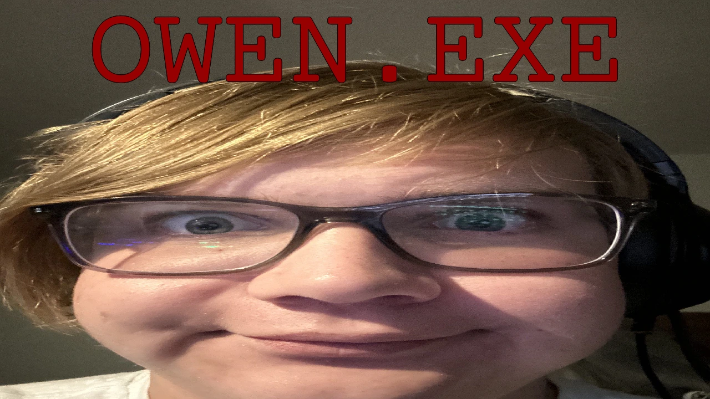
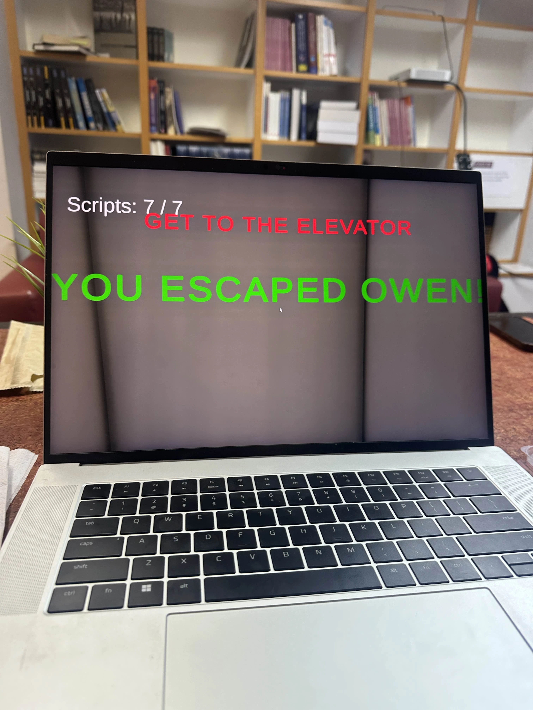

Skip to content
Miles Sanger
.
Games
About
Writing
Contact
←
All games
Owen.EXE
.
Status
Available on itch.io
Owen wants you to find his 7 screenplays!

Play in browser
(opens in a new tab)
Screenshots

Next project
The Brightest Stars
→